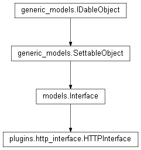

plugins.http_interface¶

API¶
- class plugins.http_interface.HTTPInterface(kernel)¶
Bases: models.Interface
Class implementing the Interface interface to make Majordom accessible through HTTP.
- run()¶
Runs the Bottle server.
- handle_request()¶
Receives and processes the request received by the server.
- plugins.http_interface.interface_class¶
alias of HTTPInterface
HTTP API description¶
This plugin sends and receives json messages, that are directly translated into Python dictionaries. An incoming (for the server) message always has a ‘command’ key in its dictionaries. This HTTP interface handles the following commands :
- get_list_ids
- get_settings
- set
- get_infos
- get_actions
- get_block_models
- add_scenario
- get_device_models
- start_adding_process
- get_device_settings
- get_auto_add_instructions
- set_device
- get_sync_instructions
- send_sync_signal
- check_if_device_detected
- get_devices
- update_devices
- device_action
- add_action
- get_scenario
- add_block
- add_info
- add_link
- update_block_positions
- set_block
- remove_block
- remove_link
- toggle_scenario
Then, the structure of the rest of the json message depends on the command: it can be seen as a function (the command) that has to be called with specific arguments (the rest of the json message). The structure of the json message and the purpose of each command will be described here in the future. For the moment, refer to the HTTP Interface Python code.